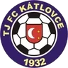

U9 prípravka
Prípravka U9 ObFZ Trnava · 9. miesto z 11
Výsledky prípraviek sa nezapisujú, rozpis zápasov je nižšie.
Program
-
3. 4.so
 OŠK Smolenicevonku · 12. kolo
12:00
OŠK Smolenicevonku · 12. kolo
12:00
- 10. 4.so Akadémia Procházka & Bukata Pečeňadydoma · 13. kolo 12:00
-
17. 4.so

TJ FC Kátlovcevonku · 14. kolo 12:00 - 24. 4.so TJ Iskra - Horné Orešanydoma · 15. kolo 12:00
-
1. 5.so
 Telovýchovná jednota Veľké Kostoľanyvonku · 16. kolo
12:00
Telovýchovná jednota Veľké Kostoľanyvonku · 16. kolo
12:00
-
8. 5.so
 TJ Elastik Bohdanovcevonku · 17. kolo
12:00
TJ Elastik Bohdanovcevonku · 17. kolo
12:00
-
15. 5.so
 TJ Družstevník Zvončíndoma · 18. kolo
12:00
TJ Družstevník Zvončíndoma · 18. kolo
12:00
- 22. 5.so vonku · 19. kolo 12:00
-
29. 5.so
 OŠK Ružindoldoma · 20. kolo
12:00
OŠK Ružindoldoma · 20. kolo
12:00
-
5. 6.so
 OŠK Dolná Krupávonku · 21. kolo
12:00
OŠK Dolná Krupávonku · 21. kolo
12:00
- 12. 6.so ŠPORTOVÉ KLUBY BLAVA 1928doma · 22. kolo 12:00
Výsledky
- 7. 11.so ŠPORTOVÉ KLUBY BLAVA 1928vonku · 11. kolo –
-
31. 10.so
OŠK Dolná Krupádoma · 10. kolo
–
-
24. 10.so
OŠK Ružindolvonku · 9. kolo
–
- 17. 10.so doma · 8. kolo –
-
10. 10.so
TJ Družstevník Zvončínvonku · 7. kolo
–
-
3. 10.so
TJ Elastik Bohdanovcedoma · 6. kolo
–
-
26. 9.so
Telovýchovná jednota Veľké Kostoľanydoma · 5. kolo
–
- 19. 9.so TJ Iskra - Horné Orešanyvonku · 4. kolo –
- 12. 9.so TJ FC Kátlovcedoma · 3. kolo –
- 5. 9.so Akadémia Procházka & Bukata Pečeňadyvonku · 2. kolo –
-
29. 8.so
OŠK Smolenicedoma · 1. kolo
–
Tabuľka
Prípravka U9 ObFZ Trnava
| Poradie | Tím | Z | V | R | P | Skóre | B |
|---|---|---|---|---|---|---|---|
| 1 | 10 | 0 | 10 | 0 | 0:0 | 10 | |
| 2 | 10 | 0 | 10 | 0 | 0:0 | 10 | |
| 3 | 10 | 0 | 10 | 0 | 0:0 | 10 | |
| 4 | Akadémia Procházka & Bukata Pečeňady | 10 | 0 | 10 | 0 | 0:0 | 10 |
| 5 | TJ FC Kátlovce | 10 | 0 | 10 | 0 | 0:0 | 10 |
| 6 | 10 | 0 | 10 | 0 | 0:0 | 10 | |
| 7 | 10 | 0 | 10 | 0 | 0:0 | 10 | |
| 8 | ŠPORTOVÉ KLUBY BLAVA 1928 | 10 | 0 | 10 | 0 | 0:0 | 10 |
| 9 | 10 | 0 | 10 | 0 | 0:0 | 10 | |
| 10 | 10 | 0 | 10 | 0 | 0:0 | 10 | |
| 11 | TJ Iskra - Horné Orešany | 10 | 0 | 10 | 0 | 0:0 | 10 |
Súpiska
Hráči, ktorí v roku 2026 nastúpili alebo boli v nominácii (Sportnet). Pri mládeži uvádzame len mená.
Brankári
- Matúš Lehuta, číslo 1
Obrancovia
- Štefan Bachratý, číslo 6
- Alexej Kormúth, číslo 15
- Sabina Oračková, číslo 4
- Adam Spáč, číslo 2
- Alexandra Široká, číslo 12
Útočníci
- Erik Beňo, číslo 16
- Hana Holekšiová, číslo 9
- Dávid Kollár, číslo 11
- Erik Kurinec, číslo 8
- Matias Malý, číslo 5
- Hana Spáčová, číslo 3
- Juraj Urminský, číslo 10
- Kristína Vitteková, číslo 13
- Max Zajíček, číslo 14
- Tomáš Zvarík, číslo 7
Realizačný tím
- TrénerMartin Spáč
- Asistent tréneraJán Urminský
- Vedúci mužstvaDušan Mikulka
- Vedúci mužstvaBranislav Lehuta
- LekárRastislav Nemček